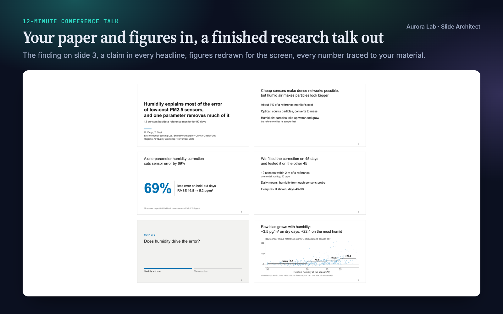
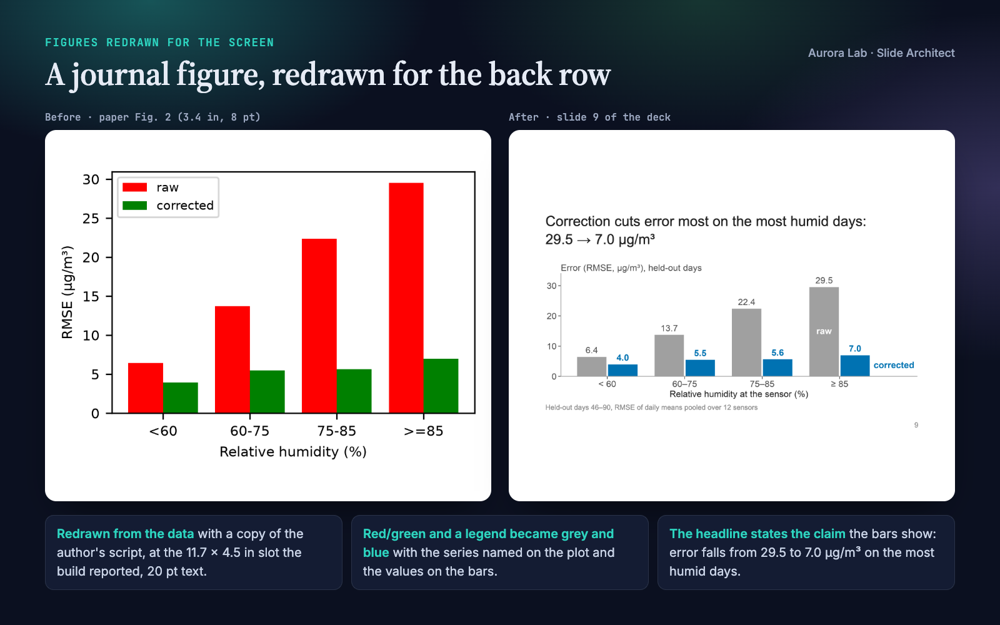
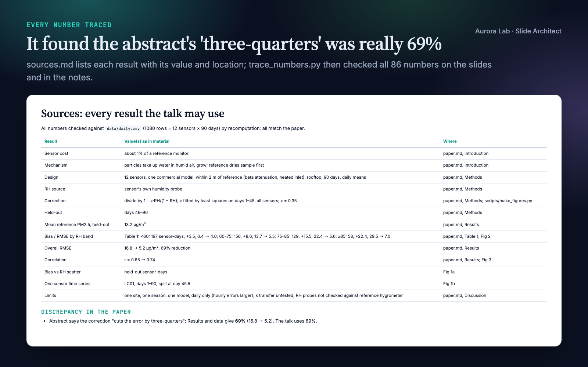
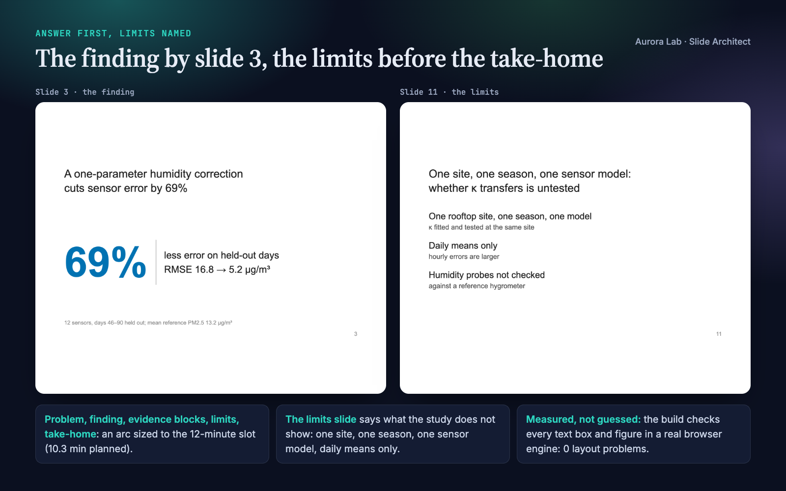
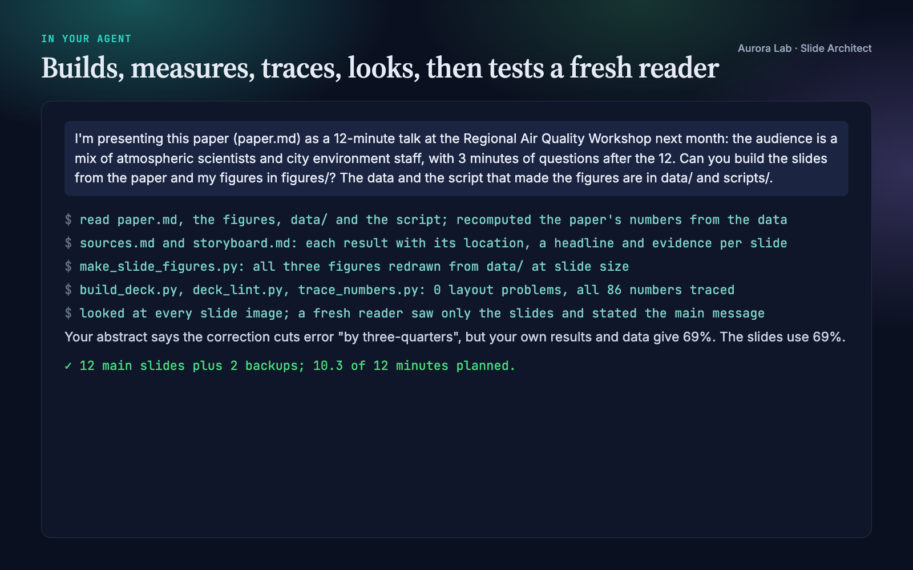

Overview
A research talk is an argument made out loud, to people who cannot turn back a page. Journal figures shrunk onto slides, headlines such as "Results", and a Methods section before any result lose them. Slide Architect turns your agent into a careful talk designer that:
- Builds the talk around your finding: the problem in the audience's terms, the answer stated by slide 3 or 4 with its number, evidence blocks that earn it, a limits slide, and a take-home that stays up during questions. Sized for the setting and the slot, with a time plan per part.
- Writes every headline as a claim: a sentence stating what the slide shows, backed by one figure, one number or a short list.
- Keeps every number traceable: an inventory of your results with their locations, and a check of every number on the slides and in the notes against your paper and data. Nothing is invented; inconsistencies in your material are reported to you.
- Redraws your figures for the screen from a copy of your plotting script and your data, at the exact size each figure takes on the slide, with 20 pt text and direct labels. Your originals are never touched.
- Builds an editable .pptx with speaker notes, plus an HTML preview, a PDF and an image of every slide.
- Measures the layout in a real browser engine, looks at every slide, and runs a fresh-reader test: a subagent sees only the slide images and says what the talk claims.
Pairs well with Talk Coach for rehearsal feedback, Q&A Prep for the questions, Poster Layout and Paper Figures. Each works on its own.
Quick start
- Get the skill from Agensi and add it to your agent (Claude Code, Codex CLI, Cursor, Gemini CLI or any agent that loads SKILL.md skills).
- Have Python 3.10+ with python-pptx and Pillow (plus matplotlib and numpy to redraw figures) and a Chrome-family browser: see Browser requirement.
- Ask in plain words, pointing at your material and saying how long the talk is.
Example requests:
- "Make a 12-minute conference talk from my paper (paper/main.md) and the figures in figures/. The data and plotting script are in data/ and scripts/."
- "Turn my thesis chapters into a 40-minute defence presentation."
- "I have a 5-minute lightning talk at the department research day: build it from this abstract and fig2.png."
- "Review talk.pptx before Friday's lab meeting: what would the audience miss?"
What you get
Everything below comes from a real run: a fresh agent session with only this skill installed, given the request in the session card. The input was ours: a synthetic, seeded study of humidity and low-cost air-quality sensors (a short paper, three journal-size figures with legends and a red/green cue, the CSV data and the plotting script). We planted one inconsistency: the abstract says the correction cuts the error "by three-quarters" while the results give 69%. The run recomputed the paper's numbers from the data, found the inconsistency, redrew all three figures at slide size, built a 12-minute deck (12 main slides, 2 backups, 10.3 minutes planned), traced all 86 numbers, looked at every slide and ran the fresh-reader test.





How it works
- Facts. Setting, slot, audience and your material. If nobody knows the aspect ratio, it uses 16:9 and says so.
- Evidence inventory. Every result the talk may use, with its value and where it comes from, plus what the material lacks.
- Finding and arc. The finding as one sentence with its number; evidence blocks chosen by what a sceptical expert needs to see; sizes and time shares for the setting.
- Storyboard. Headlines first: read alone, in order, they must tell the argument. Each names its evidence and source, and gets its seconds.
- Figures for the screen. Redrawn from your data at the size the slot needs, one panel per claim, the data the headline is about in the accent colour.
- Build and check. A short JSON spec becomes the deck; the build measures the layout, the lint checks the content rules, and the number trace checks every number.
- Look. Every slide image at full size, then six-per-page sheets that show what is hard to read from the back row.
- Fresh reader. A subagent sees only the slides: what does each slide claim, what is the finding, what would you ask?
- Hand-over. Files, the finding, the time plan, each number with its source, assumptions, and what to prepare for questions.
The talk structure
| Part | What it does |
|---|---|
| Problem | What is unknown or broken, in this audience's terms, and why it matters to them |
| Finding | The answer as one sentence with its number, by slide 3 or 4 |
| Evidence | One block per supporting result; method only where a result needs it |
| Limits | Scope, assumptions, the strongest alternative explanation |
| Take-home | The finding again and what it changes for the audience; stays up during questions |
| Backup | Slides for the questions you expect, after the end |
Lightning talks, conference talks, seminars, job talks, defences, lab meetings and online talks each get their own sizes and time shares.
What the build measures
| Problem | Flagged when |
|---|---|
| Overflowing text | a headline, list, label or caption runs past its box (it would be cut off or overlap in the .pptx) |
| Long headline | a headline wraps to three or more lines |
| Soft figure | a figure has fewer pixels than it needs on a 1920-pixel projector |
| Small figure text | a figure's text shows under 18 pt at its size on the slide, or a page-sized figure is stretched |
| Empty space | a figure fills less than 70 % of its space on the slide |
The content lint adds claim-or-topic headlines (a tested heuristic), the finding stated early and restated at the end, a limits slide, the time plan against the slot, list length, words per slide and full references on slides. What a script cannot see (whether a figure shows its headline's claim, whether a number is used with the right meaning) is the agent's job, from the slide images.
Browser requirement
The PDF, slide images and text measurements come from a Chrome-family browser run headless on your machine, with a temporary profile and no network access. Any of these works:
| System | Found automatically |
|---|---|
| macOS | Google Chrome, Chromium, Microsoft Edge or Brave Browser in /Applications or ~/Applications |
| Windows | chrome.exe, msedge.exe or brave.exe under Program Files, Program Files (x86) or Local AppData |
| Linux | google-chrome, google-chrome-stable, chromium, chromium-browser, microsoft-edge or brave-browser on PATH |
| Anywhere else | --chrome PATH or the CHROME_PATH environment variable |
Firefox and Safari cannot be driven this way. Without a Chrome-family browser the skill still writes the .pptx, the HTML preview, the speaker notes and the figure checks; the PDF, slide images and text-overflow checks are skipped, and the agent tells you it could not look at the slides.
Files it reads and writes
| Path | |
|---|---|
| Reads | the paper, figures, data and plotting scripts you point to; with a research/ folder, research/paper/, research/figures/, research/results/, research/claims.md |
| Writes | talk/ (or research/talk/): sources.md, storyboard.md, deck.json, redrawn figures and a copy of your plotting script, deck.pptx, deck.html, deck_notes.md, render/deck.pdf, render/slide-NN.png, render/grid-N.png |
Your paper, figures, data and scripts are never modified.
Command line and helper API
python slide-architect/scripts/build_deck.py talk/deck.json # .pptx, HTML, notes, PDF, slide images, report
python slide-architect/scripts/build_deck.py talk/deck.json --no-render # no browser needed
python slide-architect/scripts/deck_lint.py talk/deck.json # content rules (or an existing .pptx)
python slide-architect/scripts/trace_numbers.py talk/deck.json paper.md data/
python slide-architect/scripts/headline_check.py "Shade cools bus stops by 4 °C" "Results"
| Helper | Purpose |
|---|---|
build_deck.py |
Spec to editable .pptx with notes, HTML preview, notes file, PDF and slide images, with each figure's slot size, the time plan and every measured layout problem |
trace_numbers.py |
Every number on the slides and in the notes: found in your material, rounded from it, a declared calculation, or unsourced |
deck_lint.py |
Content rules for a spec, or a review of an existing .pptx |
headline_check.py |
Is a headline a claim, a topic label or a question? |
slide_style.use() / figure(w, h) |
matplotlib settings and a figure at its size on the slide |
slide_style.label_end(...), check(fig), save(fig, path) |
Direct labels, a check for text under 18 pt, saving at the planned size |
slide_style.equation(tex, path) |
One equation rendered to an image, no LaTeX installation needed |
The spec is plain JSON: title, finding, slot length, evidence blocks, accent colour, and per slide a type (title, claim, section, outline, end), a headline, one piece of evidence, a caption, notes and seconds. The skill ships a complete synthetic example.
FAQ
What do I need to give it?
Your paper or abstract, your figures, and ideally the data and plotting script behind them, plus the setting and slot length. It asks for what it cannot infer.
Will it change my numbers or figures?
No. Every number on the slides and in the notes is checked against your paper and data, and figures are redrawn from a copy of your script with the same data and analysis. Your originals are never modified.
Can I edit the slides afterwards?
Yes. The .pptx opens in PowerPoint, Keynote, LibreOffice and Google Slides with speaker notes. For larger changes, edit the JSON spec and rebuild so the checks run again.
Does it use my institution's template?
No. It uses one clean built-in style with your choice of accent colour, font, aspect ratio and logo. You can paste the slides into a template afterwards.
Can it review a deck I already have?
Yes: it lints the .pptx (topic titles, wordy slides, small text, legends, pies, 3D charts, big tables), maps it onto the talk structure and proposes a restructure, then rebuilds it if you want.
Limitations
- It builds talks from material you already have; it does not run new analyses, and it cannot redraw a figure without its data.
- One built-in style; no institutional templates, no Beamer/LaTeX output, no generated animations.
- The .pptx is laid out to match the measured preview; PowerPoint, Keynote or LibreOffice may wrap lines slightly differently.
- Rendering needs Chrome, Chromium, Edge or Brave; without one there are no slide images or text checks.
- The number check confirms where a number comes from, not that it is used with the right meaning; numbers inside images or written as words are checked by the agent.
- The headline check is a heuristic for English (with basic Spanish) and only warns.
- Talk formats differ between venues and institutions: check your event's current instructions.
Changelog
1.0.0 · October 2026 · First release.